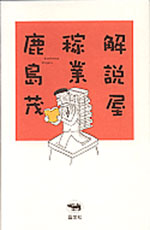
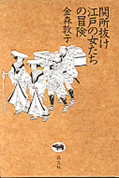

|

|
読書・エッセイ |
||
| 解説屋稼業 | |||
| 鹿島茂 | |||
|
四六判上製 240頁 |
|||
| 定価1890円（本体1800円） | |||
| ISBN4- 7949−649６-X C0095 | |||
| フランス文学者にして稀代の愛書家、読書家、エッセイストとして知られる氏の初の「解説」集。人は文庫本を手にしたとき、巻末の「解説」から目を通すことが多い。原作を生かすも殺すも「解説」次第。だから「解説」書きは真剣勝負。きっと原作も読みたくなる名「解説」36本に「解説屋稼業」の道を説くエッセイを付す。秀逸な読書ガイドでもある一冊。 |
|

|
江戸・街道 |
||
| 関所抜け 江戸の女たちの冒険 | |||
| 金森敦子 | |||
|
四六 判上製 304頁 |
|||
| 定価2415円（本体2300円） | |||
| ISBN4-7949-6497-8 Ｃ0021 | |||
| 江戸時代の関所は本当に厳しかったのだろうか？ 武士以外の庶民は、案外わき道や川を渡って、関所ぬけをし、伊勢、京都、金比羅、日光、善光寺などの名所をめぐっていた。むしろ関所ぬけをしなければ、旅は成り立たない。では、いかに関所ぬけをしていったのか？ 本庄の豪商の主婦・今野於以登の旅の金銭出納帳をひもときながら、関所ぬけの様子を再現していく。江戸の旅のイメージがガラリと変わる歴史読み物。 |